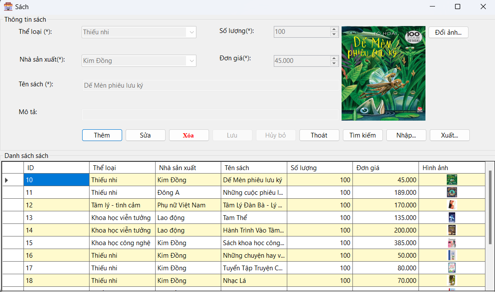

Hướng dẫn sử dụng màn hình Sách.
1. Thêm Sách Mới: Chọn thể loại, nhà sản xuất, nhập tên sách, số lượng, đơn giá, và hình ảnh. Nhấn "Thêm" để thêm sách mới vào danh sách..
2. Chỉnh Sửa Thông Tin Sách: Chọn sách cần chỉnh sửa từ danh sách sách. Thông tin sách sẽ hiển thị ở phần Thông tin sách. Chỉnh sửa các thông tin cần thiết và nhấn "Lưu".
3. Xóa Sách: Chọn sách cần xóa từ danh sách sách. Nhấn "Xóa" để xóa sách khỏi danh sách.
4. Tìm Kiếm Sách: Nhấn "Tìm kiếm" và nhập các tiêu chí tìm kiếm (thể loại, nhà sản xuất, tên sách, v.v.). Nhấn "Tìm" để tìm kiếm sách theo các tiêu chí đã nhập.
5. Nhập/Xuất Dữ liệu: Để nhập dữ liệu từ tệp, nhấn "Nhập…" và chọn tệp cần nhập. Để xuất dữ liệu ra tệp, nhấn "Xuất…" và chọn định dạng và vị trí lưu tệp.
6. Thoát ứng dụng: Nhấp vào nút "Thoát" để đóng ứng dụng.
Các nút "Lưu" và "Hủy bỏ" sẽ hiển thị khi bạn thực hiện thao tác thêm hoặc sửa thể loại sách để lưu thay đổi hoặc hủy bỏ thao tác hiện tại.